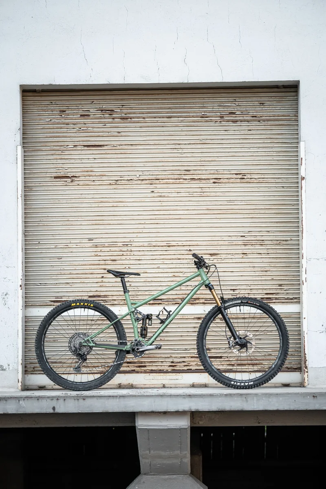
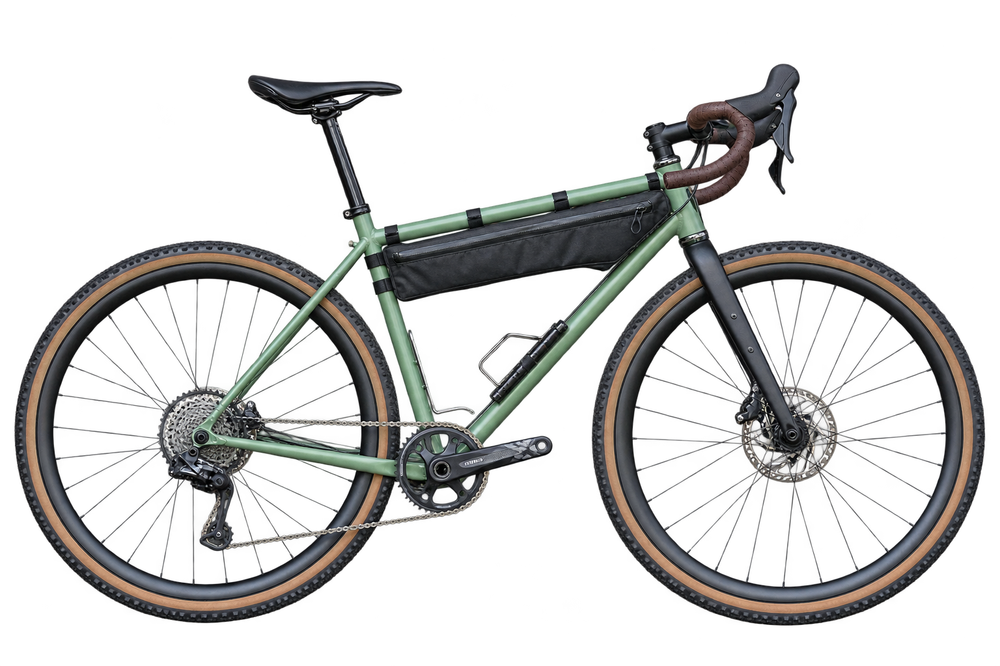
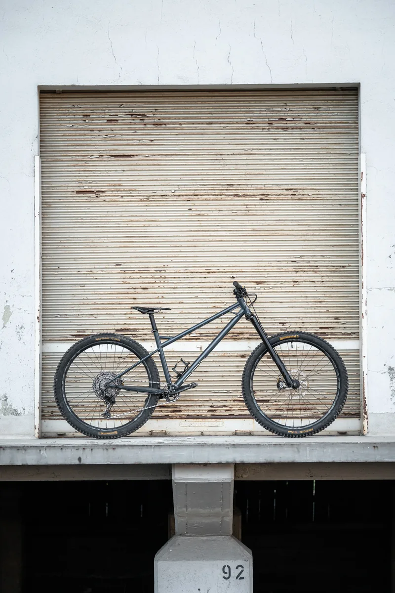
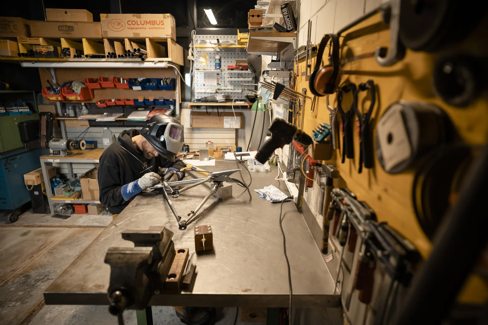
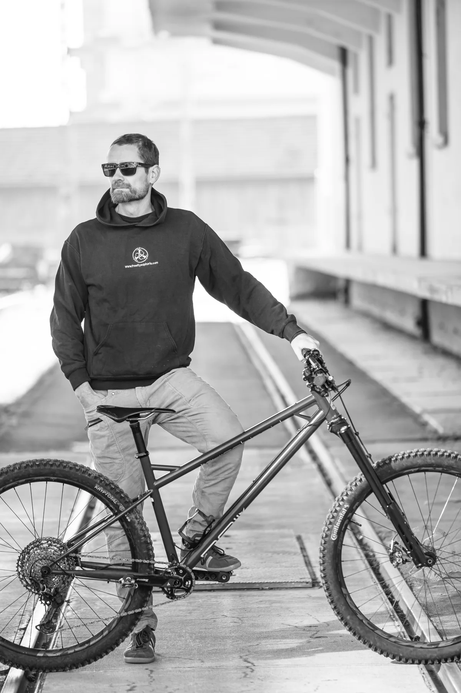

Trail


RAIL Cycles · Sarnen, Schweiz
Ausgewählte Modelle
Von Gravel bis Trail. Vier Fahrräder, jedes mit seinem eigenen Namen.
Alle Modelle entdecken
Trail

Enduro Hardtail

Gravel

Werkstatt
Vom Rahmen an der Werkbank bis zum fertigen Fahrrad: ein Blick dorthin, wo RAIL entsteht.
Die Werkstatt entdecken
Lass uns über dein Bike sprechen.